Narrative as a Culinary Experience
According to their taste and personal preference, different people enjoy different flavours of narrative.
To consume a narrative is to inevitably judge it. However, such judgement starts to break down when comparing two completely separate narratives against each other.
Is it really viable to compare a seven-part high-fantasy series to a stand-alone postmodern detective thriller? Not really. While we can and do try to make a gauge on our ballpark enjoyment, any deeper analysis on plot, characterisation or prose collapses in a nefariously tenuous heap.
Some narratives couldn't care less about a plot; others couldn't care less about characterisation. The same is true for just about any other key narrative feature you care to mention. The extent to which these tools are wielded is unique to each and every narrative.
In contrast, rather than ballparking the abstract phenomena we call enjoyment, consider purely genre based judgement. That is, within the strict classification of a particular agreed upon style, which work has the best quality according this measure.
When searching for narrative quality, this is an undeniably more useful measure. For example, if the quality of a murder mystery is measured according to how tight its plot is, you can then use this as a heuristic to measure quality far more accurately1By no means is there only source of reference for the quality of a genre, I've simply making the point that such a heuristic can and is used.
Unfortunately, as good as this approach is, there are still some circumstances in which it completely breaks down. Most notably, any instances which combine, ignore or transcend genre. By focusing solely upon genre, wider, more abstract comparison is impossible.
Is there an alternative then? Someplace between the hyperbroad expanse of everything and the restrictive channels of genre. The answer, as far as I can tell, lies inherent within the idea of taste itself. Because to best excerise taste, you first have to identify three distinct culinary experiences2Just to clarify, I'm not saying that culinarity should completely replace genre or universal rating. At worst it's another lens through which to view narratives. At best it's a useful complement to both genre and universal rating alike:
Fast food
Fine dining
Home cooked meals
Each of these culinary experiences are distinct as they are identifiable. Fast food is cheap, mass produced and easy to consume. Home cooked meals are hearty, human and lovingly prepared. Fine dining is rich, artistic and nuanced. Though difficult to completely classify these experiences, they are each readily and easily recognisable3To help with this, for each elaboration below I've included what I consider to be higher quality examples of each culinary experience.
While vaguely aligned to high-brow, low-brow and somewhere in between, culinarity is an attempt to capture narrative beyond sophistication, instead focusing on the very substance embodied at the heart of every narrative. More on this soon.
In essence, each of these groupings are broad enough to encompass genre, but distinct enough to still focus on an identifiable subset. Importantly, instead of distinguishing content by the focus of the narrative, culinarity distinguishes content by how the narrative is presented. This incorporates more than just subject matter, but presentation, prose, atmosphere, plot, character, pacing; every element which works together to create the the narrative as a whole.

Fast food type novels tend to rely on the same few formulaic recipes and clichés, dispensing with any polished trimmings or flourishes. Though they may have no intellectually nutritional value, they still can have strong entertainment value. The type of works which I'm referring to here lie squarely in the realm of pulp entertainment and mainstream bestsellers.
In terms of novels, these are what G.K Chesterton, and later George Orwell, described as Good Bad Books.
...the kind of book that has no literary pretensions but which remains readable when more serious productions have perished. — George Orwell, Good Bad Books
Here Orwell included the works of Arther Conan Doyle, Ian Fleming and E. W. Hornung. Other more contempory examples I would add include most of the works of Clive Cussler, John Grisham and James Patterson4It is worth noting that the works of many authors mentioned do not all fit squarely in any single distinct catagory; most may lie in one, a few in others, some may even cross between two. These classifications are by no means set in stone; think of them as a useful lens through which to consider narratives.
. 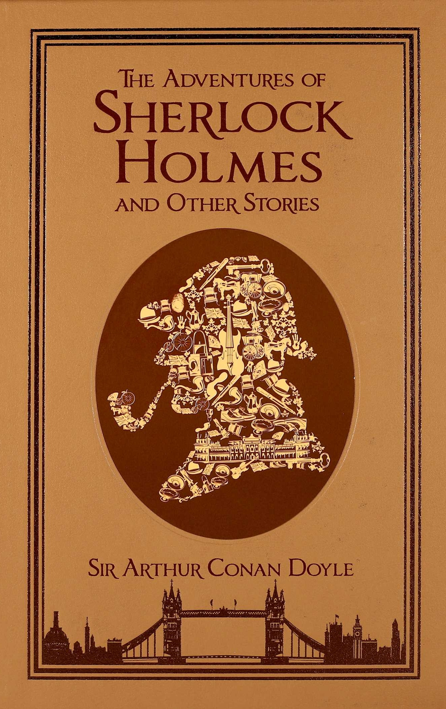 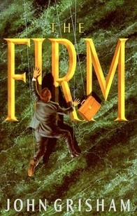 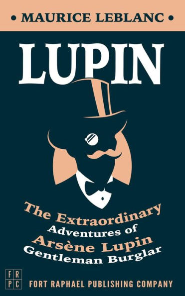
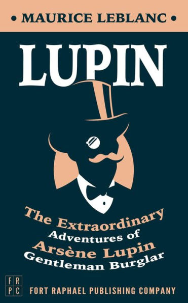
Fast food movies capture the same ideal. Alongside the half-baked popcorn blockbusters, as well as the chick flicks, the Netflix comedies and the mindless action-thrillers, fast food movies also tend to be franchises. Think Mission Impossible, Pirates of the Caribbean, Transformers and just about any Marvel or DC creation. These are all the works for the masses: unsophisticated, simple, entertaining.
 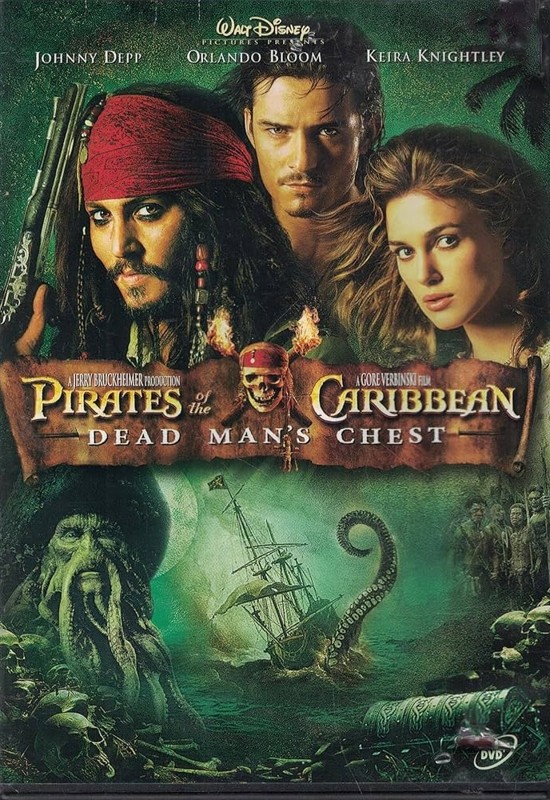
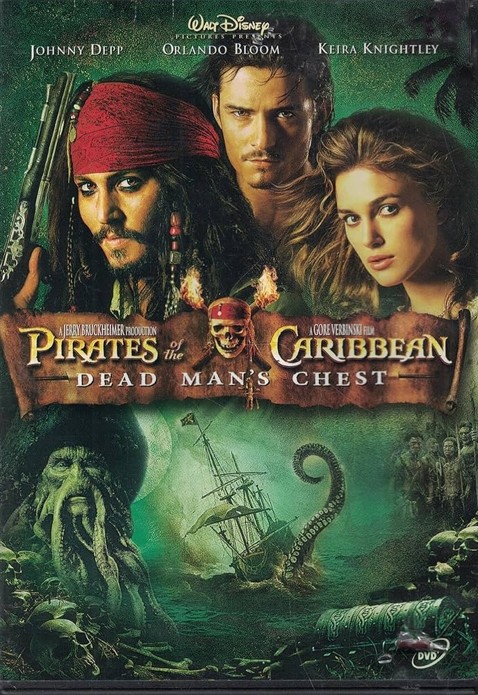


Though they inhabit a place somewhere in between fast food and fine dining, narratives as home cooked meals have a unique feel in their own right. While home cooked meals may rely on recipes, there is something comforting in the simplicity of a story well told. The key type of works I'm referring to here lie squarely in the realm of pure storytelling, the kind which conjure up a weary traveller leaning close with a twinkle in their eye and saying let me tell you a story...
Examples in the world of novels include the works of Neil Gaimen, Brandon Sanderson and Stephen King. J.K Rowling. Terry Pratchett. G.K. Chesterton. R.L. Stevenson. C.S. Lewis. Charles Dickens.
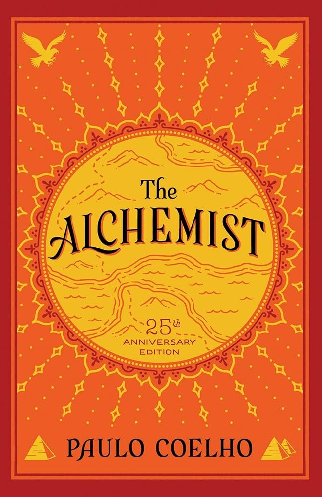 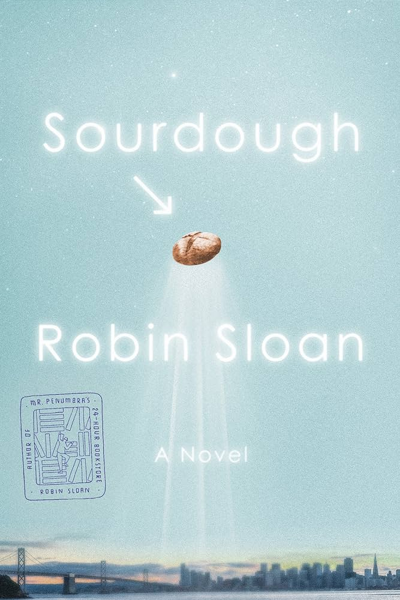 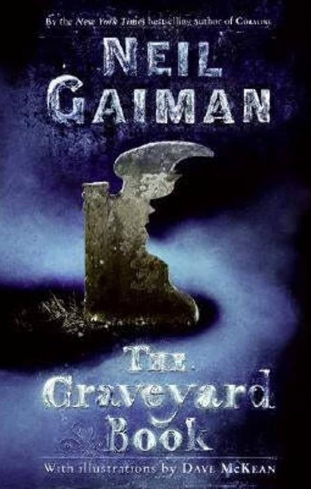
Movies as cooked meals include many biopics, Pixar movies and most period flicks.
 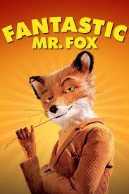
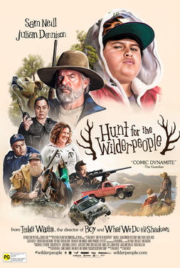
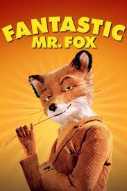
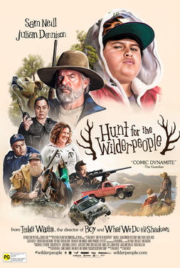
Fine dining are works to be appreciated, to be savoured. On the macro there is deep exploration of ideas and themes, while on the micro every sentence is thoughtfully and artfully constructed. The focus of novels as fine dining is not entertainment value, but intellectual value. That being said, it is possible to have intricate, crafted presentation which says absolutely nothing at all.
Generally, novels as fine dining are what one might describe as high literature, literary fiction or The Classics; also generally, these are the type of novels which tend to Pulitzer prizes and other literary awards.
Historical examples include the works of Jane Austen, Ernest Hemingway, Oscar Wilde; more recently, they have come to include Barbara Kingsolver, Donna Tartt and Cormac McCarthy.
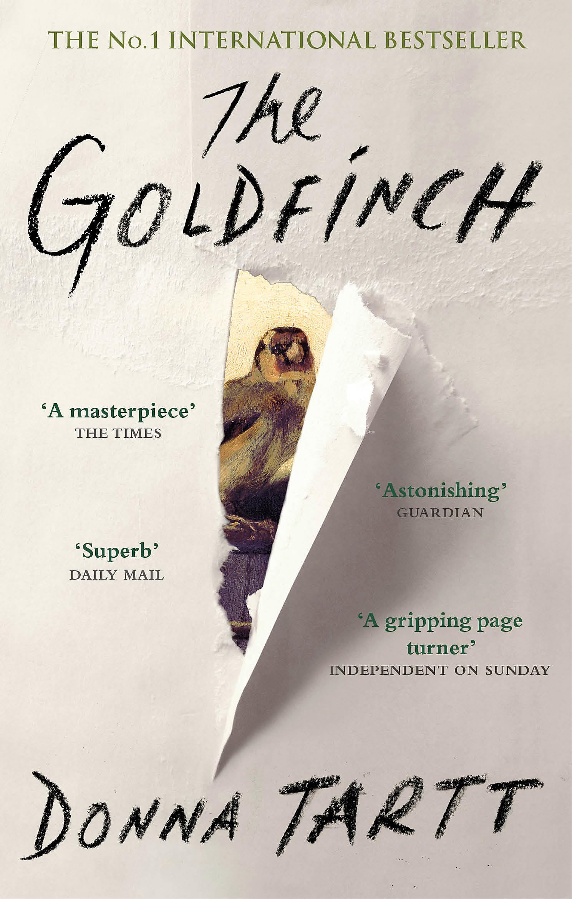 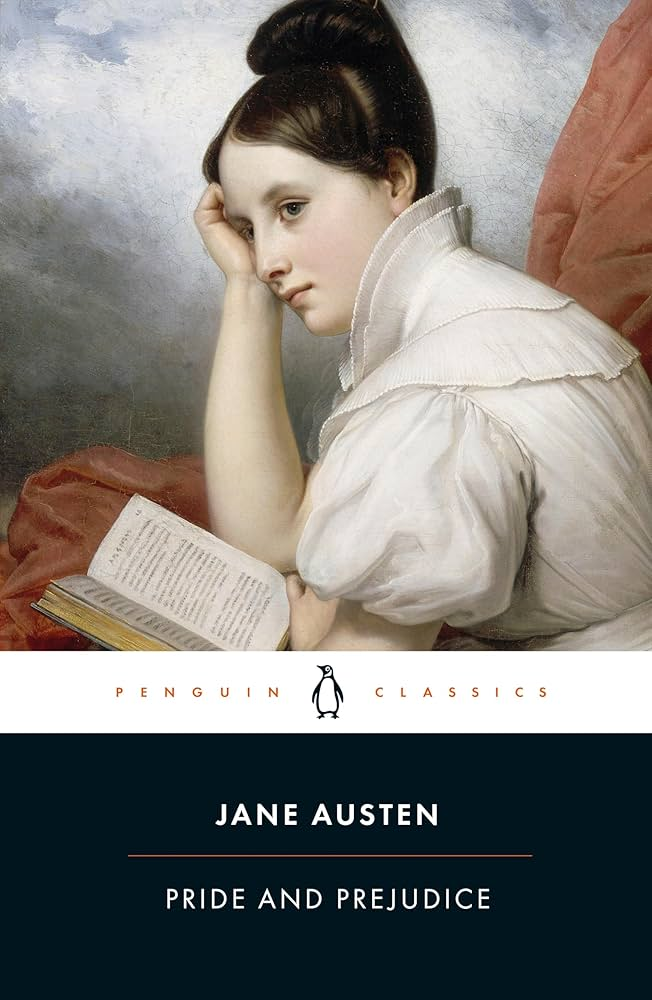 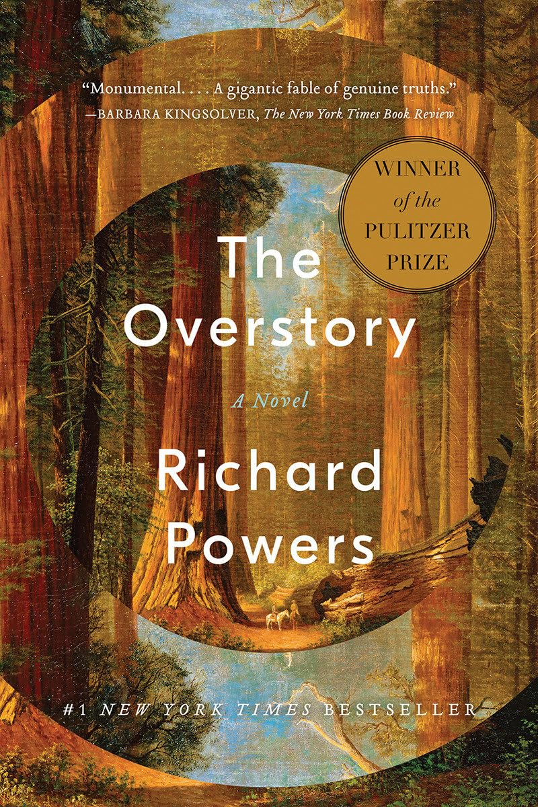 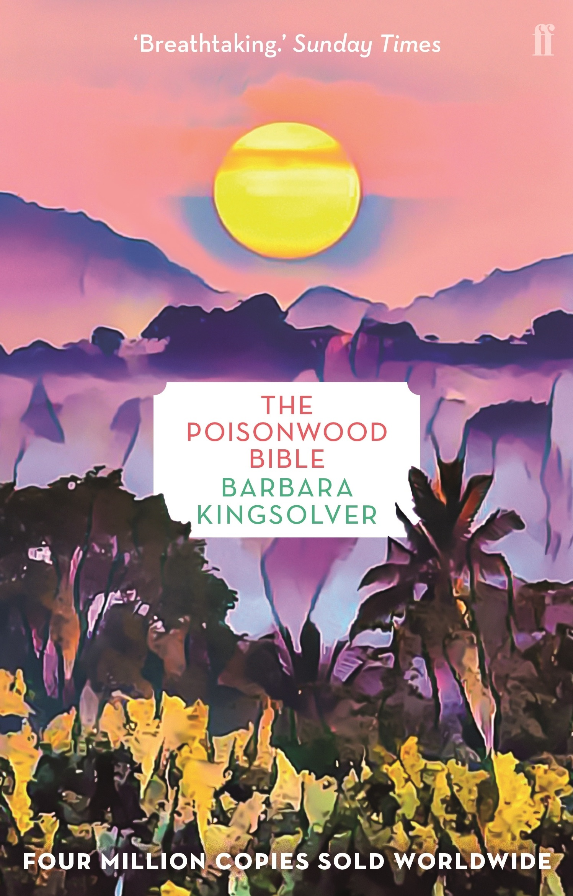 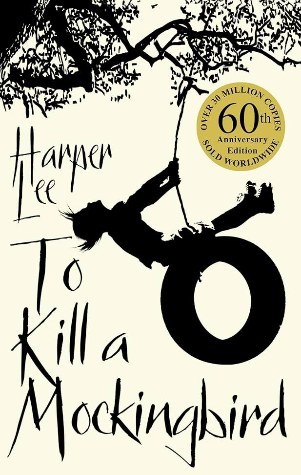Fine dining in cinema tends to include your Oscar winners, as well as movies filmed by notable directors such as Steven Spielberg, David Fincher, Alfred Hitchcock or Christopher Nolan.
 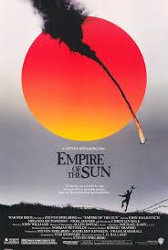
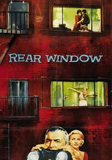
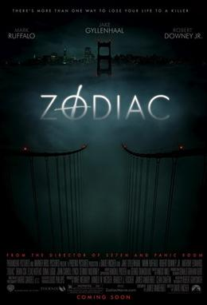
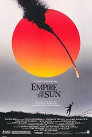
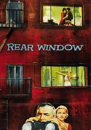
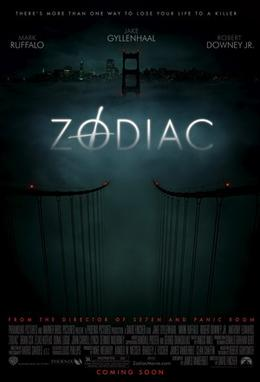

Within each culinary experience there still exists the familiar spectrum of quality. Just as no genre is inherently better than any other, neither is any particular culinarity. Home cooked meals, fine dining and fast food can all be terrible, and they can all be outstanding.
Let me explore a little deeper here. For better or for worse, the experience of eating is based on more than just the quality of the food. In additonal to this there is also a subtle psychological element: expectations.
To have a fine dining experience is to be presented with an array of visually stunning meals, of minimalist lavish decadence, and in turn, we tend to expect an equally stunning culinary experience. And yet in spite of this, sometimes fine dining is completely mediocre, if not downright repulsive.
The opposite effect is also at work in fast food. Somewhere along the line we unconsciously connected cheap with cheap and nasty. And while this stereotype does exist for a reason, this is not always necessarily true. While it may not look like much, fast food can sometimes be a triumph of pure tastiness.
All this is to say, you can't judge a book by its cover.
All this is to say, culinarity is completely independent of quality.
All this is to say, narratives truly are culinary experiences.
← Language as Insight Harmony →